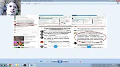
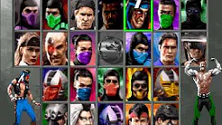
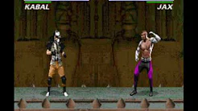

Início
Emuladores
Site oficial do Liperock
Ultimos Videos
ePSXe 1.60 Online Mortal Kombat Trilogy P1-Liperock vs P2- Pro Player(Argentina)
[TUTORIAL] Como treinar o Reflexo Ultimate Mortal Kombat 3 Snes
[TUTORIAL] Como deixar o karapunch mais rápido(Funciona no umk3(snes,arcade),mkt (psx,64)

Provando que o Speed fala mal de mim
Videos mais assistidos
Respondendo o Jogador Alan Speed
Minha História no Mortal Kombat!!!

Znes 1.36 Ultimate Mortal Kombat 3 Snes P1-LIPEROCK VS P2-ALARIC

Tutorial como fazer o Kara-Punch! By Liperockkk
Inscreva-se